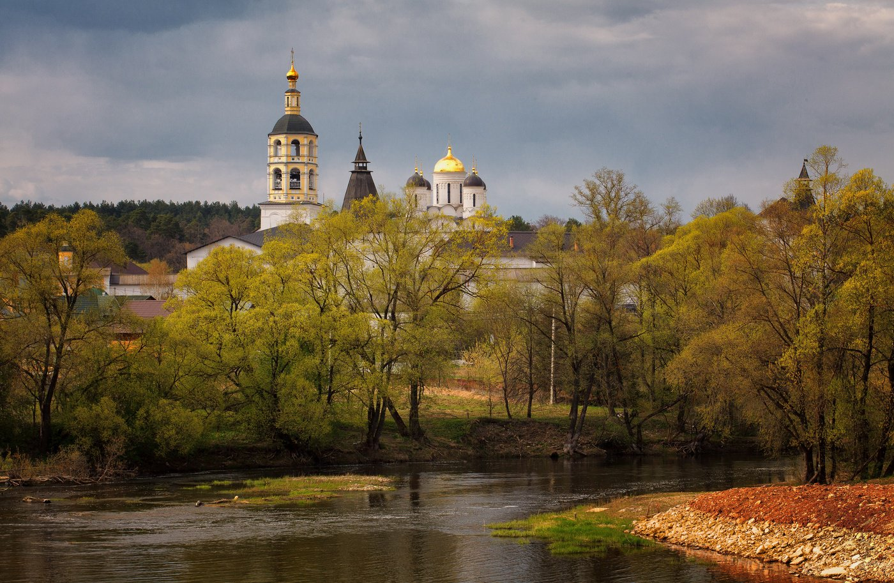
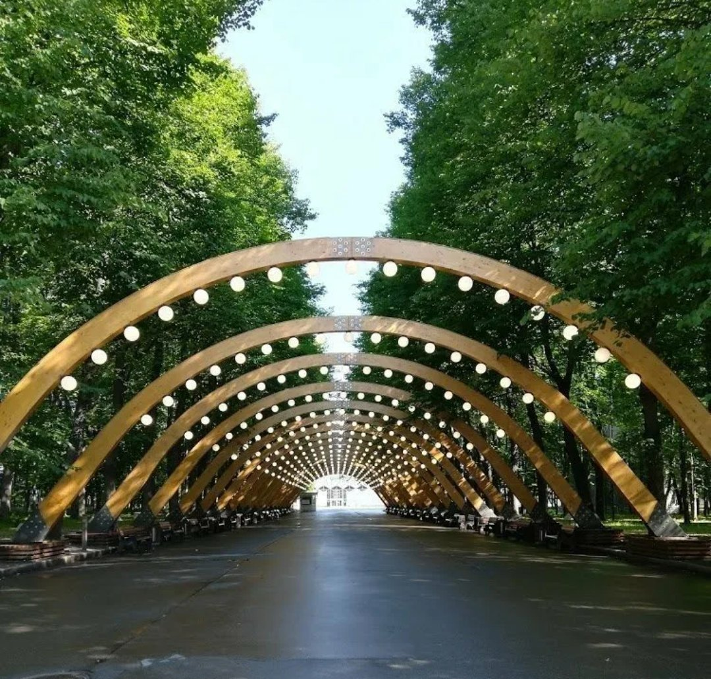
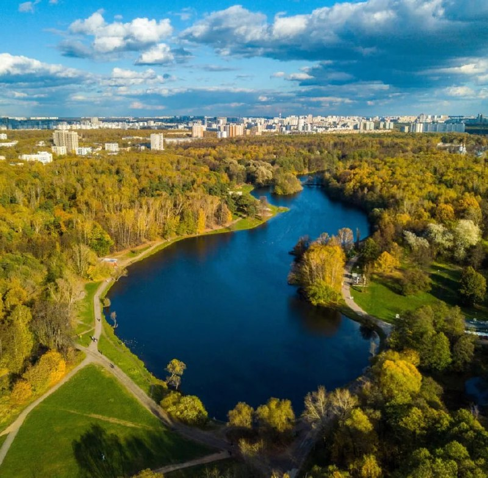
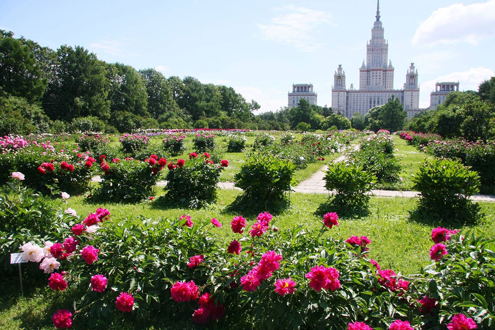
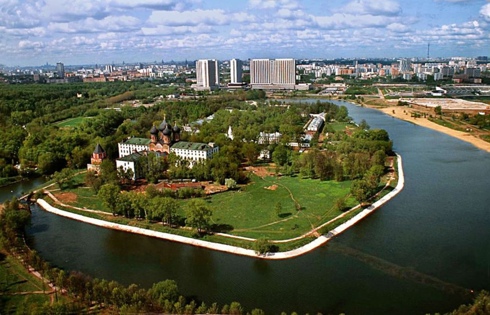

Сканди-мероприятия
-

АВТОБУСНО-ПЕШЕХОДНОЕ ПУТЕШЕСТВИЕ «ВОЛШЕБНЫЙ БОРОВСК»
20 апреля 2024г 10:00
Однодневное путешествие в небольшой купеческий городок Боровск, раскинувшийся по обоим берегам реки Протвы.
Боровск, основанный в XV веке, славится своими древними старообрядческими храмами, памятниками архитектуры и уникальной атмосферой старинного русского города, наполненного перезвоном колоколов. Здесь можно насладиться природными красотами в окрестностях Боровска, окруженного живописными холмами и сосновыми борами, давшим название городу.
• Мы побываем в селе Рябушки - исторической родине семьи Рябушинских;
• По возможности, поднимемся на колокольню Пафнутьево-Боровского монастыря;
• Узрим памятник "неистовому протопопу" Аввакуму и посетим старообрядческий храм начала XX
века;
• Погуляем по торговым рядам и улочкам с купеческими особняками;
• Увидим место заточения Феодосии Морозовой, храм, где венчался К. Э. Циолковский и самую старую деревянную церковь Калужской области;
• Отыщем граффити художника Владимира Овчинникова, прославившего город;
• Насладимся прекрасными видами Боровска с 3-ёх смотровых площадок и получим хорошее настроение.
Встречаемся в 8:00 у метро «Саларьево» (точное место встречи будет опубликовано в организационном чате).
Отправление от точки сбора около 8:30. Путешествуем на минивэне маленькой дружной группой в сопровождении гида Василия Злотникова.
Во время путешествия совершим остановку на обед в 14:00 кафе «Чайная» в Боровске (комплексный обед входит в стоимость).
Ориентировочное время возвращение к станции метро «Саларьево» 19:00. Василий очень интересный и увлекающийся гид, потому мы не можем гарантировать точное время возвращения. Группа - 6 человек. Одежда обычная, городская, согласно погоде; палки с собой не берем.
В стоимость входит весь трансфер, экскурсионное обслуживание, комплексный обед в кафе «Чайная».
В стоимость НЕ входит: дорога до точки сбора, входные билеты в музеи.
Гид – Василий Злотников.
Организатор - Маргарита Волосюк.
Стоимость: 7500р
ЗаписатьсяПодробнее -
SCANDI-путешествие по выставке «Россия». Часть 2
28 апреля 2024г 10:00
Продолжаем планомерное изучение выставки Россия. В этот раз наши планы даже более интересные, чем в предыдущий визит. В субботу, 28 апреля 2024 года, мы встречаемся утром и сразу отправляемся в 75 павильон.
Наша цель - путешествие по залу "А", где представлены достижения регионов Центральной России, Кавказа и Поволжья. Огромный павильон вмещает в себя все субъекты нашей страны. Мы сможем услышать народные песни, попробовать блюда региональной кухни, поучаствовать в работе атомной станции или создать свой собственный чай.
В павильоне "Е" мы познакомимся с новостями РЖД и последними разработками Яндекса, совершим путешествие на машине времени из 1990-х в наши дни и снимем видео через набирающие популярность нейросети.
В город пришла весна, мы можем сполна насладиться красотой Москвы, солнцем и теплом… Но вот уже слышен рев моторов и сигналы клаксонов – мы приближаемся к музею «Гараж особого назначения ФСО России», где попытаемся разгадать секреты организации, отвечающей за охрану и передвижение первых лиц государства. В экспозиции представлено более 50 единиц уникальной автомобильной и мотоциклетной техники. Вместе с экскурсоводом посетим гараж Николая II, увидим автомобили, обслуживавшие руководителей СССР и современной России и мотоциклы Почетного эскорта.
В общем, изучаем огромную выставку Россия без спешки и суеты.
У нас припасено ещё одно путешествие на выставку: в мае 2024-го года мы идём смотреть на музыкальные фонтаны, а также обязательно подробно изучим экспозицию павильона АТОМ.
Продолжительность экскурсии - примерно 4 часа, сопровождает наш гид Дмитрий Лесных.
После экскурсии - остановка на обед в каком-нибудь кафе на территории выставки. А со всеми, кто не устал, продолжим сканди-прогулку по Ботаническому саду.
Форма одежды – спортивная, по погоде.
Группа до 10 человек.
В стоимость входит всё спортивно-экскурсионное сопровождение и использование радиогида.
Стоимость: 2400р
ЗаписатьсяПодробнее -

Scandi-прогулка-тренировка Сокольники - Ростокино
1 мая 2024г 11:00
1 мая предлагаем вам весело и спортивно провести время в компании любителей скандинавской ходьбы. Мы пойдем от ст.м.Сокольники через парк Сокольники, потом через парк Лосиный остров и вдоль р.Яузы к Ростокинскому акведуку.
Почему для первомайской прогулки я выбрала именно этот парк, узнаете при встрече)) Мы обязательно позанимаемся скандинавской ходьбой, сделаем различные упражнения, а ещё подышим чистым воздухом, поговорим об истории этих мест и полюбуемся проснувшейся природой. А в завершении можно будет перекусить или попить чай в кафе.
Старт: ст.м.Сокольники
Протяженность: ок.12 км
Продолжительность : от 4 ч
Инструктор: Елена Краснова
Вся подробная информация по прогулке после регистрации в группе в Телеграм
Стоимость: 1500р
ЗаписатьсяПодробнее -

SCANDI-поход плюс тренировка по «Зеленому кольцу Москвы». Часть 3.
5 мая 2024г 10:00
Зелёное кольцо Москвы - это пешеходный маршрут протяжённостью 160 километров, который проходит по паркам и зелёным зонам с минимальными переходами по городским улицам и опоясывает таким образом Москву.
На пути встречается множество достопримечательностей — есть возможность увидеть не просто зеленые парки, но и самые красивые виды города, исторические места и много интересных и неизвестных памятников столицы.
Маршрут подходит как для семейных прогулок, так и для тренировок спортсменов в беге, маунтинбайке, скандинавской ходьбе. Зимой — для занятий лыжами. Автор маршрута Александр Советов.
На этом этапе пройдём участок м.Кузьминки – м.Измайловская
✅Увидим парки:
• Усадьба Кусково
• Терлецкий парк
• Измайловский парк
Участок протяжённостью около 15 км
✅Нас ждёт :
• Сканди-разминка
• Дыхательная гимнастика
• Поход с наслаждением и любовью
• Дружеские кофе/чайные паузы
• Растяжка в конце маршрута
Длительность около 6-7 часов
Участок можно пройти не полностью. Будет возможность свернуть с маршрута в районе метро Новогиреево.
📍Одежда и обувь спортивная по погоде.
📍Скандинавские палки берем с собой и улыбку тоже.
📍Термосы с чаем и перекусы приветствуются.
ВНИМАНИЕ! Могут быть внесены изменения в маршрут. Обо всех изменениях и точках встречи узнаете в организационном чате
Инструктор: Волосюк Маргарита
Стоимость: 1000р
ЗаписатьсяПодробнее -

Дорога в Лавру, часть 8. Радонеж - Семхоз
4 мая 2024г 8:00
Друзья, мы продолжаем наш маршрут из Москвы в Троице-Сергиеву Лавру. На этот раз пойдем очередной, восьмой, отрезок пути. Вся дорога составляет 120 км. Мы разделили её на несколько этапов. В этот раз маршрут около 17 км.
Для тех, кто только думает впервые к нам присоединиться, хочу заметить, что идти с нами вы можете любой этап. Каждый последующий этап начинается точно в том месте, где закончился предыдущий. По дороге мы ставим печати в Подорожную грамоту, и в какой последовательности эти печати у вас появятся не имеет значения. Мы обязательно пойдём маршрут ещё, но пока не известно когда. Скорее всего сезон будет точно другой. А это значит, совершенно другие впечатления.
Сергий Радонежский – один из самых почитаемых святых на Руси. А с конца XIV в., основанный им, Троицкий монастырь стал центром притяжения. Совершать паломничество в Троицкую обитель стало традицией, как у простого люда, так и у знатного. Причем проделать путь до монастыря надо было обязательно пешком.
Пойдем от городища Радонеж до платформы Семхоз.
В Радонеже позавтракаем. Ещё раз полюбуемся долиной речки Пажи, заглянем в Преображенскую церковь и отправимся в путь. Тропинка живописная, со спусками и подъемами, через леса и поля. Далее, на берегу, озера, мы устроим небольшой пикник, поэтому прихватите с собой теплое питье и перекус. Во время прогулки сделаем разминку, суставную, дыхательную и нейрогимнастику, упражнения на различные группы мышц и технику скандинавского шага, в завершении обязательная растяжка.
Одежда удобная, спортивная по погоде. Скандинавские палки с собой.
И самое главное – обязательно возьмите с собой хорошее настроение!
Идем в субботу, 4 мая 2024 г.. от городища Радонеж.
Встречаемся на Автостанции ВДНХ в 8:00-8:10. Автобус отправляется в 8:20.
Возвращаемся на электричке от ст.Семхоз.
Протяженность всего маршрута: ок.17 км.
Продолжительность: весь день (от 7 часов)
Инструктор: Елена Краснова
Включено: тренировка и сопровождение на маршруте.
Самостоятельно оплачивается проезд на автобусе и электричке, завтрак в Радонеже.
После регистрации Вы получите информационное письмо с подробной информацией по времени и месту встречи.
Стоимость: 1600р
ЗаписатьсяПодробнее -

Scandi-прогулка и экскурсия по Воробьёвым горам и Бот.саду МГУ
18 мая 2024г 10:00
Воробьёвы горы – по праву считаются одним из красивейших мест Москвы. Помимо смотровых площадок это место стало оплотом российской науки. Университетский кампус - настоящий “город в городе”.
Вместе с агроэкологом Антоном Гладилиным мы совершим погружение в “секреты Воробьёвых гор”. Как возникла эта местность, В чем ее геологические особенности? Что здесь находилось до постройки университета? Как менялся проект главного здания, и как происходило его строительство? Также мы будем искать интересные детали и разберем некоторые мифы.
Во время прогулки по традиции уделим внимание определению дикорастущей флоры. А в завершение маршрута попадем на закрытую территорию ботанического сада биологического факультета МГУ, где на площади в 9 га собраны около 2000 видов травянистой флоры. В саду произрастают лучшие отечественные и зарубежные сорта плодовых и ягодных растений, часть которых выведена сотрудниками сада. А коллекция сирени является одной из крупнейших в России (130 сортов).
Мы полюбуемся видами главного здания в обрамлении цветущей сирени и познакомимся с коллекций ботанического сада!
До встречи же с нашим экскурсоводом, мы активно позанимаемся скандинавской ходьбой. А именно: пройдем круговой маршрут по Воробьевым горам, во время которого отработаем технику скандинавского шага и сделаем различные упражнения.
По уже сложившейся традиции, по вашему желанию, вы можете принять участие только в прогулке, только в экскурсии или совместить Scandi-прогулку и экскурсию и провести невероятно насыщенный день на природе. Перед посещением Бот.сада мы обязательно пообедаем в кафе (оплачивается самостоятельно).
Инструктор: Елена Краснова
Экскурсовод: Антон Гладилин
Протяженность и продолжительность маршрута:
Scandi-прогулка – ок.5 км и ок.2 ч
Scandi-прогулка+экскурсия – ок.8 км от 6 ч
Стоимость:
Scandi-прогулка: 1100 р
Экскурсия: 1600 р
Scandi-прогулка+экскурсия: 2400р
ЗаписатьсяПодробнее -

Царственные жены Измайловского острова. Scandi-прогулка-тренировка и экскурсия
26 мая 2024г 9:30
"Женщина – это волшебство, которое никогда не иссякнет". Фёдор Тютчев
Друзья, ну, куда же наш мир без женщин! Приглашаем спортивно и интересно провести выходной в бывшей царской резиденции. И не где-нибудь. А на единственном в Москве рукотворном острове!
Отправляемся на сканди-прогулку-тренировку в парк Измайлово. После прогулки посетим с экскурсией выставку "Царственные жены на Измайловском острове".
Во время прогулки позанимаемся скандинавской ходьбой, отработаем технику шага и различные упражнения. Мы с вами пройдем 5-7 км, полюбуемся природой и подышим свежим лесным воздухом. После прогулки пообедаем и отправимся на экскурсию в музей.
Когда: 26 мая 2024г, в 9:30
Отправляемся от ст. МЦК Соколиная гора
Начало экскурсии в 14:00
Заканчиваем ок.15:30 в Усадьбе Измайлово
Вы можете посетить сканди-прогулку, экскурсию, прогулку+экскурсию.
Инструктор: Краснова Елена.
Экскурсовод музея
При регистрации в Примечании укажите, пожалуйста, в какой программе вы хотите принять участие.
После регистрации вы получите информационное письмо с подробностями места и времени встречи, а также внесения предоплаты.
Стоимость:
1500р - Scandi-прогулка
500р/400р (полный/льготный билет) - экскурсия в Усадьбе Измайлово
1900р/1800р - полная программа - прогулка+экскурсия по выставке
Включено: экскурсионно-спортивное сопровождение
ЗаписатьсяПодробнее